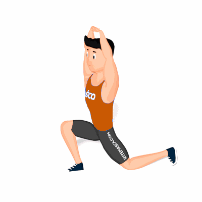

Alongamento Cadeia Posterior e Quadríceps

O exercício tem como objetivo alongar os músculos da Cadeia Posterior e do Quadríceps. O benefício do exercício se apresenta no dia a dia, auxiliando nas atividades diárias e atividades físicas.
Ficha Técnica
Tipo: Alongamento
Grupo Muscular: Perna
Aparelho: Nenhum
Músculos: Nenhum
Como realizar
- Fique em posição de afundo;
- Inicie o movimento esticando os braços para cima e realizando uma anteriorização do quadril sem permitir que o calcanhar da perna da frente desencoste do solo;
- Em seguida abaixe os braço até o solo e leve o quadril para trás estendendo o máximo que conseguir a perna que está a frente;
- Repita os movimentos pela quantidade de vezes prescrita pelo professor(a).
 RC STORE
RC STORE